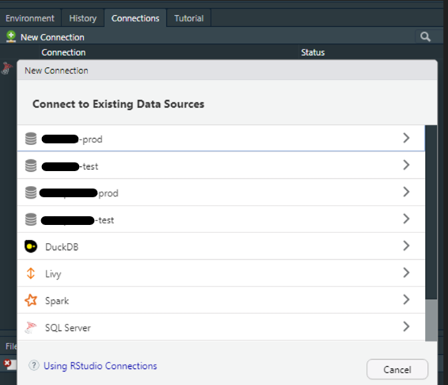
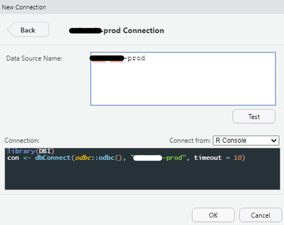
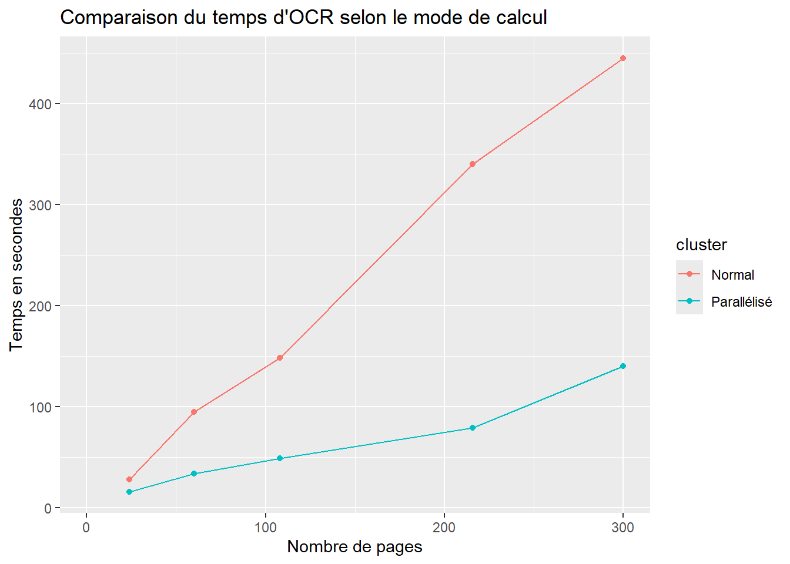

library(readr) # package du Tidyverse
read_csv("path/to/iris.csv")Recueil de données
R
Bases de données
Se connecter à tout type de données
R est un langage qui permet d’intéragir avec à peu près n’importe quel format de données :
Des fichiers tabulaires (CSV, Excel, Parquet…), en local ou sur un serveur
Des bases SQL/NoSQL : MS SQL Server, MySQL, MongoDB, Oracle, DuckDB…
Des données hébergées sur un cloud (GCP, AWS, Azure…)
Des données récupérées via du webscraping ou une requête API
Des données au format JSON ou XML
Mais pas seulement ! R peut également travailler avec des images (OCRiser un PDF pour récupérer son contenu, ou en générer un), des fichiers DICOM, et bien plus encore.
CSV en local
Commençons avec le plus simple : les fichiers CSV
Sepal.Length Sepal.Width Petal.Length Petal.Width Species
1 5.1 3.5 1.4 0.2 setosa
2 4.9 3.0 1.4 0.2 setosa
3 4.7 3.2 1.3 0.2 setosa
4 4.6 3.1 1.5 0.2 setosa
5 5.0 3.6 1.4 0.2 setosa
6 5.4 3.9 1.7 0.4 setosaOn fait difficilement plus facile. On notera tout de même que {readr} offre des arguments et fonctions supplémentaires pour gérer différents problèmes que l’on rencontre souvent avec le CSV : les séparateurs et l’encodage.
La fonction read_csv lit par défaut des fichiers au “format international” dont le séparateur est une virgule (,) et la décimale un point (.). Cependant, en France (et en Europe), on utilisé généralement la virgule comme séparateur décimal. On a donc inventé le format csv avec séparateur point-virgule (;) et décimale en virgule (,). Pour lire un fichier sous ce format, on peut utiliser la fonction read_csv2() de {readr}.
Pour des formats encore plus exotiques (tsv par exemple), read_delim() permet de préciser le délimiteur.
On notera aussi que les fonctions read_*() fournissent des arguments permettant d’expliciter les valeurs nulles, de retirer les espaces en début/fin de chaîne (ce qui arrive très souvent sur des données saisies à la main dans Excel), de différencier des noms de colonnes en doublons, ou encore de sauter les premières lignes d’un fichier.
library(readr)
read_csv2("path/to/file_fr.csv", # lire un fichier au format FR, delim = ;
na = c("","NULL","NA"), # les cases contenant "","NULL" et "NA" seront vides
trim_ws = TRUE, # trim_whitespace : retirer les espaces en fin de chaîne
skip = 1, # sauter la première ligne
name_repair = "unique" # différencier les noms en doublons
)CSV à distance
Les fonctions read.*() (en base R) et read_*() ({readr}) permettent toutes de charger des fichiers CSV via une URL.
covid_data <- readr::read_csv2("https://www.data.gouv.fr/api/1/datasets/r/fe3e7099-a975-4181-9fb5-2dd1b8f1b552")
head(covid_data)# A tibble: 6 × 9
fra strate2 jour PourAvec tx_indic_7J_DC tx_indic_7J_hosp
<chr> <dbl> <date> <dbl> <chr> <chr>
1 FR 0 2020-03-07 0 0 0
2 FR 0 2020-03-07 1 <NA> 0
3 FR 0 2020-03-07 2 <NA> 0
4 FR 0 2020-03-08 0 0 0
5 FR 0 2020-03-08 1 <NA> 0
6 FR 0 2020-03-08 2 <NA> 0
# ℹ 3 more variables: tx_indic_7J_SC <chr>, tx_prev_hosp <dbl>,
# tx_prev_SC <chr>Excel
Les fichiers dits “Excel” ont l’extension .xls ou .xlsx, et peuvent contenir différents feuillets, de la mise en forme, des cellules fusionnées, des formules, des commentaires et des graphes.
Pour lire ces données, il existe plusieurs librairies : {readxl}, {openxslx} ou {openxslx2}
library(readxl)
read_excel("path/to/file.xslx",
sheet = 1, # feuillet, par numéro ou par nom
range = "B3:D87", # les cellules à garder (optionnel)
na = c("","NULL","NA"), # les cellules à considérer vides
.name_repair = "unique" # différencier les noms en doublons
)Parquet
Le format .parquet, encore malheureusement peu connu, est un format compressé et orienté en colonnes, orienté vers la performance. Un même jeu de données au format parquet est entre 5 et 10 fois moins volumineux qu’en csv et est optimisé pour être lu rapidement par R ou Python. On citera aussi sa compatibilité avec DuckDB pour former un duo parfait pour travailler le Big Data avec R. L’un des rares défauts qu’on peut lui trouver est de ne pas être compatible avec Excel, ce qui limite sa diffusion.
Si vous ne l’avez pas encore lu, je vous renvoie vers cet excellent article : Parquet devrait remplacer le format CSV
Il existe deux méthodes principales pour lire un fichier parquet en R : {arrow}, la librairie de Apache Arrow et {duckDB}, la librairie de DuckDB.
Les deux méthodes permettent de créer une connexion vers le jeu de données, au lieu de les importer dans la mémoire de R, permettant de travailler avec des données pus volumineuses que la RAM. Les deux méthodes permettent d’utiliser {dplyr} pour le requêtage, mais {duckdb} permet aussi de requêter n’importe quel fichier plat en SQL.
On notera également la capacité à lire plusieurs fichiers regroupés dans un dossier (ayant le même schéma), voire même des fichiers partitionnés (au style Hive), permettant de ne scanner que les données nécessaires, pour optimiser encore plus la performance de requêtage.
# Arrow :
library(arrow)
arrow_df <- read_parquet("path/to/file.parquet")
# Il est possible de lire directement un ensemble de fichiers .parquet ayant le même schéma
# et regroupés dans un dossier (données par batch, avec un fichier par mois par exemple)
arrow_dataset <- open_dataset("path/to/folder")
# Ici, arrow_dataset est une connexion, de classe `Dataset`
# Un `Dataset` de {arrow} se requête avec {dplyr}
# pour récupérer les données dans l'environnement de R :
arrow_df <- arrow_dataset |>
filter(...) |> # la plupart des fonctions de {dplyr} sont compatibles
select(...) |>
collect() # pour exécuter la requête et récupérer un tibble/dataframe
# DuckDB :
library(duckdb)
library(DBI) # DataBase Interface
library(dplyr)
conn_ddb <- DBI::dbConnect(duckdb(), dbdir = ":memory:") # Créer une base duckdb virtuelle
duck_df <- conn_ddb |>
tbl("path/dataset/**/*.parquet") |>
filter(...)
# Le ** signifie "tout", et permet de lire tous les fichiers .parquet du dossier
# Dans un fichier partitionné par exemple
TipNote
{arrow} renvoie des objets de type arrow_table ou Dataset, qui ne sont compatibles qu’avec les fonctions de {dplyr}. Si vous souhaitez modifier une colonne avec une fonction de {purrr}, {lubridate} ou {stringr}, il faudra d’abord utiliser collect() pour obtenir un tibble.
A l’inverse, {duckdb} renvoie des objets de classe tbl (donc des tibble). Si l’on ajoute l’incroyable performance de requêtage du moteur duckdb, j’aurais plutôt tendance à privilégier cette méthode
ImportantInfo
Récemment, {duckplyr}, une librairie intégrant {dplyr} avec le moteur de {duckdb} a rejoint le Tidyverse, signe que Duckdb est perçu comme un outil d’avenir.
Connexions aux bases SQL
Si vous utilisez Rstudio, le moyen le plus simple de se connecter à une source de données est d’utiliser l’onglet Connections, généralement situé en haut à droite, avec votre Environnement. En cliquant sur New connection, une fenêtre apparaît et va automatiquement vous proposer les sources à disposition.

Si vous avez déjà configuré un DSN contenant vos identifiants, les informations de connexion devraient déjà être remplies, vous n’avez plus qu’à cliquer sur “OK”, et le code s’exécutera dans la console. Vous pourrez alors visualiser vos bases dans l’onglet Connections

Sinon, vous aurez besoin d’entrer les paramètres suivants :
user = “…” pour le nom d’utilisateur
password = “…” pour le mot de passe
host et port si besoin
dbname pour le nom de la base de données
Si vous utilisez uniquement la console, vous pouvez rentrer directement les paramètres dans dbConnect(), en arguments de la fonction.
Une fois connecté, on peut requêter ses données avec {dplyr} ou en SQL, en utilisant dbGetQuery()
library(DBI)
library(odbc)
conn <- DBI::dbConnect(odbc::odbc() ,"server-name", database = "MA_BASE")
# SQL
ma_table <- DBI::dbGetQuery(conn,
"SELECT * FROM MA_TABLE
WHERE ...")
# DPLYR
library(dplyr)
ma_table_2 <- dplyr::tbl(conn, "MA_TABLE") |> # ici, on créé une connexion à la table
dplyr::filter(...) |> # on créé la requête
dplyr::collect() # et on collecte le résultat dans R avec collect()Pour interagir avec une base SQL pour autre chose qu’une requête (UPDATE, DROP, …), on peut utiliser la librairie {dbplyr}, un back-end de {dplyr} pour les bases de données, ou utiliser DBI::dbExecute()
Cloud
R dispose de nombreuses librairies pour récupérer des données hébergées sur un serveur cloud. Je n’entrerai pas dans les détails de cette partie, car je n’ai pas encore eu beaucoup l’occasion de pratiquer par moi-même, mais je penserai à la mettre à jour dès que possible.
Google Cloud Platform
Voici une liste non exhaustive des librairies permettant de travailler avec Google Cloud Platform, disponible sur la vignette de {googleAuthR}
googleComputeEngineR - Google Compute Engine VMs API
searchConsoleR - Search Console API
bigQueryR - BigQuery API. Part of the cloudyr project.
googleAnalyticsR - Google Analytics API
googleTagManagerR - Google Tag Manager API by IronistM
googleID - Simple user info from G+ API for Shiny app authentication flows.
googleCloudStorageR - Google Cloud Storage API
RoogleVision - R Package for Image Recogntion, Object Detection, and OCR using the Google’s Cloud Vision API
googleLanguageR - Access Speech to Text, Entity analysis and translation APIs from R
googleCloudRunner - Continuous Development and Integration with Cloud Run, Cloud Scheduler and Cloud Build
AWS
La documentation officielle de Amazon Web Service dispose d’un tutoriel pour accéder aux données du service depuis R.
API REST
Le plus simple selon moi pour requêter une API REST avec R est d’utiliser l’excellent {httr2} de Hadley Wickham (que vous connaissez déjà certainement si vous utilisez le Tidyverse). La documentation du package est disponible ici
La première chose à faire est évidemment de lire la documentation de l’API que l’on souhaite requêter. Pour vous entraîner, vous pouvez utiliser une des API disponibles sur data.gouv.fr. Pour cet exemple, j’utiliserai l’API de Hub’eau pour la qualité de l’eau potable en France.
Une fois rendus sur le site, la documentation nous indique que la “Base URL” est hubeau.eaufrance.fr/api, puis nous indique les extensions à ajouter selon ce que l’on souhaite requêter (liste des communes ou résultats), puis les parmètres de filtrage
On utilisera également la librairie {jsonlite} pour convertir les données récupérées au format JSON en un data.frame
TipAstuce
Le package {httr2} nécessite l’installation du package {curl}, qui peut poser problème si vous êtes sur un réseau professionnel protégé par un pare-feu. Dans ce cas, contactez votre DSI, ou … faites un partage de connexion depuis votre téléphone 🤫
library(httr2)
library(jsonlite)
base_url <- "http://hubeau.eaufrance.fr/api"
req <- request(base_url) |> # pointer vers l'url de base
req_url_path_append("/v1/qualite_eau_potable/resultats_dis") |> #extension
req_url_query(code_departement = "85") |> # paramètres de la requête
req_url_query(size = "50") |>
req_url_query(
fields = c('libelle_parametre','libelle_parametre_maj',
'resultat_numerique', 'libelle_unite',
'limite_qualite_parametre','reference_qualite_parametre',
'nom_commune','date_prelevement',
'conclusion_conformite_prelevement'),
.multi = "comma")
resp <- req_perform(req)
df_data <- resp |>
resp_body_string() |>
fromJSON()
df_data <- df_data$data
head(df_data) libelle_parametre
1 Cel. de cyanobactéries toxinogènes
2 Cyanobactéries toxinogènes (exprimées en biovolume)
3 Numération des cellules de phytoplanctons
4 Cellules de cyanobactéries
5 Microcystine-RR totale
6 Somme des microcystines analysées (calcul)
libelle_parametre_maj resultat_numerique libelle_unite
1 CEL. DE CYANOBACTÉRIES TOXINOGÈNES 0.041 n(cellules)/mL
2 CYANOBACTÉRIES TOXINOGÈNES 0.732 mm3/L
3 CELLULES DE PHYTOPLANCTONS 1.000 n(cellules)/mL
4 CELLULES DE CYANOBACTÉRIES 0.041 n(cellules)/mL
5 MICROCYSTINE-RR TOTALE 0.000 µg/L
6 SOMME DES MICROCYSTINES ANALYSÉES (CALCUL) 0.000 µg/L
limite_qualite_parametre reference_qualite_parametre nom_commune
1 <NA> <NA> APREMONT
2 <NA> <NA> APREMONT
3 <NA> <NA> APREMONT
4 <NA> <NA> APREMONT
5 <=1 µg/L <NA> APREMONT
6 <=1 µg/L <NA> APREMONT
date_prelevement
1 2025-06-30T14:00:00Z
2 2025-06-30T14:00:00Z
3 2025-06-30T14:00:00Z
4 2025-06-30T14:00:00Z
5 2025-06-30T13:55:00Z
6 2025-06-30T13:55:00Z
conclusion_conformite_prelevement
1 Eau d'alimentation conforme aux exigences de qualité en vigueur pour l'ensemble des paramètres mesurés.
2 Eau d'alimentation conforme aux exigences de qualité en vigueur pour l'ensemble des paramètres mesurés.
3 Eau d'alimentation conforme aux exigences de qualité en vigueur pour l'ensemble des paramètres mesurés.
4 Eau d'alimentation conforme aux exigences de qualité en vigueur pour l'ensemble des paramètres mesurés.
5 Eau d'alimentation conforme aux exigences de qualité en vigueur pour l'ensemble des paramètres mesurés.
6 Eau d'alimentation conforme aux exigences de qualité en vigueur pour l'ensemble des paramètres mesurés.
TipCacher les clés API
Dans le cas où vous utilisez une API privée nécessitant une clé, il est judicieux d’éviter de stocker vos identifiants dans le script R. Pour cela, vous pouvez utiliser un fichier .Rprofile, stocké sur votre machine locale, et qui se lance quand vous démarrez votre IDE. Ainsi, vos identifiants sont présents dans votre environnement sans avoir à les déclarer dans le script. Si vous hébergez votre code sur GitHub, vous pouvez inclure le .Rprofile dans le .gitignore pour éviter de les inclure dans le repo, et utiliser la fonction Github Secrets pour remplacer le .Rprofile.
Webscraping
Si vous souhaitez récupérer des données sur un site web qui ne propose pas d’API, l’une des solutions est le web scraping.
WarningAttention
Tous les sites n’autorisent pas le web scraping, et les données doivent être nativement publiques, tombées dans le domaine publique ou sous licence libre si votre usage n’est pas commercial. Renseignez-vous avant de scraper une page !
Le principal package de web scraping en R est {rvest} (toujours développé par Hadley Wickham). Pour cet exemple, j’utiliserai aussi {polite}, un package qui permet de suivre 3 règles d’éthique lors d’une session de scraping : “Demander la permission, prendre doucement et ne jamais demander deux fois”. Ces règles permettent d’éviter de causer des problèmes en récoltant des données non autorisées ou en surchargeant le serveur de requêtes, et nous éviterons d’être bannis par les administrateurs du site scrapé.
Dans cet exemple, nous allons récupérer une table contenant la liste des communes de Vendée, sur cette page wikipédia
library(rvest)
library(polite)
url <- "https://fr.wikipedia.org/wiki/Liste_des_communes_de_la_Vend%C3%A9e"
session <- polite::bow(url)
# Bow permet d'interroger le robots.txt et nous informe du résultat
# il enregistre notamment le délai minimum de requêtage autorisé par le site
session
page <- polite::scrape(session)
# scrape() récupère le contenu autorisé
cities_table <- page |>
rvest::html_element("table.wikitable") |>
rvest::html_table()
# html_element récupère le premier élément de la classe "table.wikitable"
# pour tous les récupérer sous forme de liste : html_elements()
# html_table() permet de convertir des données tabulaires en un dataframe
head(cities_table)# A tibble: 6 × 10
Nom CodeInsee `Code postal` Arrondissement Canton Intercommunalité
<chr> <dbl> <dbl> <chr> <chr> <chr>
1 La Roche-sur-Y… 85191 85000 La Roche-sur-… La Ro… CA La Roche-sur…
2 Les Achards 85152 85150 Les Sables-d’… Talmo… Pays-des-Achards
3 L'Aiguillon-la… 85001 85460 Les Sables-d'… Mareu… CC Sud-Vendée-L…
4 L'Aiguillon-su… 85002 85220 Les Sables-d'… Saint… CA Pays de Sain…
5 Aizenay 85003 85190 La Roche-sur-… Aizen… CC de Vie-et-Bo…
6 Angles 85004 85750 Les Sables-d'… Mareu… CC Vendée-Grand…
# ℹ 4 more variables: `Superficie(km2)` <chr>,
# `Population(dernière pop. légale)` <chr>, `Densité(hab./km2)` <chr>,
# Modifier <lgl>OCR et PDF
Dans le domaine de la santé, les compte-rendus médicaux contiennent énormément de données intéressantes, mais sont malheureusement difficilement exploitables car dans un format non-structuré : un papier scanné et stocké en PDF.
L’OCR (Optical Character Recognition) est un système de machine learning permettant d’extraire le texte présent sur une image, parfait donc pour exploiter un grand nombre de comtpe-rendus scannés sans avoir à le faire manuellement.
Dans cet exemple, nous utiliserons le modèle Tesseract, développé par Google et aujourd’hui Open Source. Nous utiliserons également la librairie doParallel pour paralléliser le traitement des images et augmenter la vitesse d’OCRisation
library(tidyverse)
library(tesseract)
library(doParallel)
library(pdftools)
# Récupérer le chemin de tous les fichiers PDF présents dans un dossier
list_pdf <- list.files(path = "path/to/folder",
pattern = "\\.pdf$",
all.files = TRUE,
full.names = TRUE,
recursive = FALSE
)
ncores <- doParallel::detectCores(logical = FALSE) # compter les coeurs physiques
# Créer le cluster, en laissant 2 coeurs non utilisés
cl <- doParallel::makeCluster(ncores-2)
# et pour arrêter : stopCluster(cl)
# Charger les librariries et les objets dans les clusters
## clusterEvalQ() : exécute le code dans le cluster
clusterEvalQ(cl, {
library(tidyverse);
library(tesseract);
library(pdftools)
})
## clusterExport() charge l'objet dans le cluster
clusterExport(cl, c("list_pdf"))
# Créer une fonction qui renvoie un dataframe en sortie (1 ligne par page)
myPdfConvert <- function(list_objet) {
list_objet %>% map_df(~ data.frame(doc_origin = .x, #.x = chaque élément de listobjet
texte = ocr(pdftools::pdf_convert(.x, dpi = 200)) # océrise un pdf converti en png
))
}
# Appliquer la fonction myPdfConvert à chaque élément de list_pdf
res <- parLapply(cl, list_pdf, myPdfConvert)
# Le résultat est obtenu sous forme de liste (1 élément par cluster) => les recombiner
res <- do.call("rbind", res)
# Arrêter le cluster
stopCluster(cl)
# Pour récupérer numéro de page et nom du doc à chaque ligne (1 ligne = 1 page)
resr <- res %>%
group_by(doc_origin) %>%
mutate(doc_page = 1:n(), doc_nom = str_extract_all(doc_origin, "[[:alnum:]_ ]*\\.pdf")) %>%
ungroup()Pour visualiser l’impact de la parallélisation :

JSON et XML
Les formats XML (eXtensible Markup Language) et JSON (JavaScript Object Notation) sont largement utilisés pour le stockage et l’échange de données, notamment dans les API REST, les flux RSS, ou le stockage de données hiérarchiques .
Pour lire les fichiers XML, on utilisera{xml2} et pour JSON :{jsonlite} (il en existe de nombreuses autres, mais ce sont les plus connues)
XML
Supposons que nous ayons un fichier “livres.xml” ressemblant à cela :
library(xml2)
xml_doc <- as_xml_document(
"<livres>
<livre>
<titre>R pour les débutants</titre>
<auteur>Jean Martin</auteur>
<annee>2020</annee>
</livre>
<livre>
<titre>Analyse de données avec R</titre>
<auteur>Marie Dupont</auteur>
<annee>2021</annee>
</livre>
</livres>"
)Pour lire le fichier .xml, on utilisera
xml_doc <- xml2::read_xml("livres.xml")Ensuite, on peut extraire les titres avec
titres_xml <- xml_find_all(xml_doc, ".//livre/titre")
print(titres_xml){xml_nodeset (2)}
[1] <titre>R pour les débutants</titre>
[2] <titre>Analyse de données avec R</titre>Les fonctions xml_find_*() permettent d’utiliser des expression xpath, similaire à du REGEX mais pour les architectures en arbre et renvoient des objets de classe xml_nodeset. Pour récupérer un vecteur character, on rajoute simplement xml_text()
titres <- xml_text(titres_xml)
print(titres)[1] "R pour les débutants" "Analyse de données avec R"JSON
Pour lire du JSON, on utilisera simplement fromJSON(), pour convertir une chaîne de texte, ou read_json() pour lire un fichier .json. Les deux fonctions renvoient directement un data.frame
library(jsonlite)
livres_json <- fromJSON(
'
[
{
"titre": "R pour les débutants",
"auteur": "Jean Dupont",
"annee": 2020
},
{
"titre": "Analyse de données avec R",
"auteur": "Marie Curie",
"annee": 2021
}
]
')
print(livres_json) titre auteur annee1 R pour les débutants Jean Dupont 2020 2 Analyse de données avec R Marie Curie 2021
On citera aussi la possibilité de convertir un objet R en JSON avec la fonction toJSON().
DICOM
Sans rentrer dans les détails ici, le format DICOM (Digital Imaging and Communications in Medicine) est un standard pour l’imagerie médicale. le package {Espadon} développé par le CNRS permet d’interagir avec ce format
GPX
GPX est un format pour les données géospatiales, qui permet par exemple de créer un itinéraire sur une carte. Cet article explique très bien comment lire ce standard, souvent stocké au format XML.